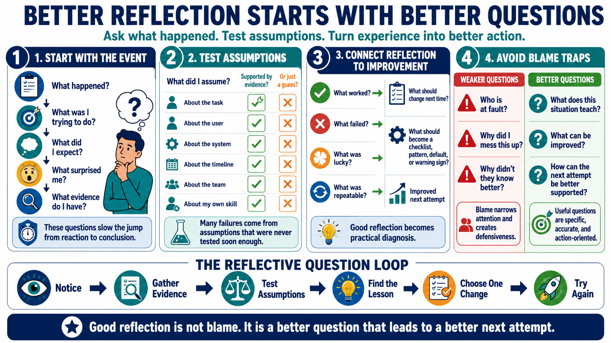

Asking Better Reflective Questions
Connecting to LMS... Progress: in progress

Narration
Better reflection starts with better questions. What happened? What was I trying to accomplish? What did I expect? What surprised me? What evidence do I have? These questions slow the move from emotional reaction to conclusion. They help separate the event itself from the first story the mind creates about the event.
Assumption questions are especially useful. What did I assume about the task, the user, the system, the timeline, the team, or my own skill? Which assumptions were supported by evidence, and which were guesses? Many failures are not caused by lack of effort. They are caused by reasonable-looking assumptions that were never tested soon enough.
Outcome questions connect reflection to improvement. What worked? What failed? What was lucky? What was repeatable? What would I do differently next time? What should become a checklist, pattern, default, or warning sign? These questions turn reflection into a practical diagnosis rather than a general feeling that something was good or bad.
Blame questions usually produce weaker learning. Who is at fault? Why did I mess this up? Why did they not know better? These questions narrow attention and often make people defensive. Useful reflective questions stay specific and action-oriented. They ask what the situation teaches, what can be improved, and how the next attempt can be better supported. The tone matters because people are more likely to learn when the question gives them room to be accurate instead of merely protective.